Manual de Carino DICOM
Carino DICOM es una pasarela DICOM y un equipo de continuidad: recibe estudios, los enruta y los reenvía, los publica por Query/Retrieve y DICOMweb, y sostiene el servicio de imagen cuando el PACS o el RIS dejan de responder. Este manual cubre la puesta en marcha, los trabajos de cada día y qué hacer cuando fallan, el modelo de seguridad, cada servicio y sus límites reales.
Todas las capturas de este manual son de una instancia real de este software con estudios inventados para la foto. Aquí no aparece ningún paciente.
Contenido
1. Qué es y qué papel juega
Carino DICOM se instala entre los equipos que generan imágenes y los sistemas que las guardan o las leen. No pretende sustituir a tu archivo: pretende ser la pieza que los conecta y la que sigue en pie cuando alguna de las otras se cae.
Hace dos papeles, y conviene distinguirlos porque determinan qué servicios activas:
- Pasarela permanente. Recibe por C-STORE, archiva en disco por paciente/estudio/serie, reenvía a uno o varios destinos según reglas, anonimiza la copia que sale si lo pides, y publica lo que tiene por Query/Retrieve (para equipos antiguos) y por DICOMweb (para visores modernos).
- Red de seguridad. Si el PACS principal deja de responder, puede activar su propia Modality Worklist para que los técnicos sigan estudiando, retener lo que llega durante la caída y reenviarlo automáticamente cuando el principal vuelve. También recibe órdenes HL7 por MLLP —o las capturas a mano— cuando el RIS es el que está caído.
Todo se define en un único config.json y todo puede ejecutarse sin interfaz gráfica.
El panel web es cómodo, no obligatorio.
Puertos por defecto
| Servicio | Puerto | Protocolo |
|---|---|---|
| Receptor (Storage SCP) | 11112 | DICOM / DIMSE |
| Impresión virtual | 11113 | DICOM Print |
| Modality Worklist | 11114 | DICOM C-FIND |
| Query/Retrieve | 11115 | DICOM C-FIND/C-MOVE/C-GET |
| RIS de emergencia | 2575 | HL7 sobre MLLP |
| Panel web + DICOMweb | 8042 | HTTP |
Por qué 11112 y no 104. El puerto registrado de DICOM es el 104, que en
Linux y macOS es privilegiado y exige arrancar como root. El valor por defecto evita eso.
Configura tus equipos en consecuencia, o publica 104 hacia 11112 desde
el contenedor o el cortafuegos.
2. Primeros pasos
Elige la forma de ejecutarlo
| Forma | Para qué caso | Arranca sola tras un corte |
|---|---|---|
| App de escritorio (bandeja) | Un puesto con alguien sentado delante: una sala, un consultorio, una prueba. | Solo si activas «iniciar al abrir sesión» |
| Docker / Podman | Un servidor, o cualquier máquina donde quieras aislarlo y moverlo entero. | Sí (restart: unless-stopped) |
| Servicio systemd | La cajita permanente del servicio de imagen, sin nadie con sesión iniciada. | Sí |
App de escritorio
Descarga el paquete de tu sistema desde la página de releases y ábrelo. Se queda en la bandeja del sistema; al hacer clic se abre el panel. Como todavía no está firmado digitalmente, Windows y macOS avisan la primera vez: en la portada están los pasos exactos para abrirlo igualmente.
En el primer arranque pregunta, una sola vez, si puede consultar en GitHub si hay una versión más nueva. Si respondes que no —o si cierras la pregunta— se queda desactivado, que es como viene de fábrica. Si está activado, una versión nueva aparece como una línea en el menú de la bandeja y junto a la versión en el panel Resumen; al hacer clic en cualquiera de las dos se abre la página del release en tu navegador. No se descarga nada ni se instala nada solo. La casilla Buscar actualizaciones del menú de la bandeja lo activa y lo desactiva cuando quieras, y esto solo existe en la versión de escritorio: los despliegues en contenedor y con systemd no lo tienen.
Docker
git clone https://github.com/MiguelCarino/Carino-DICOM
cd Carino-DICOM
mkdir -p data
echo "PACS_UID=$(id -u)" >> .env
echo "PACS_GID=$(id -g)" >> .env
docker compose up -d --build
docker compose logs -f pacsEl primer arranque genera e imprime un token de acceso en el log. Abre
http://127.0.0.1:8042/ y pégalo cuando el panel lo pida. Todo —configuración,
estudios, logs, índice— vive en ./data, que es lo que tienes que respaldar.
El fallo más común del primer arranque es que ./data pertenezca a root:
el contenedor nunca corre como root y muere con EACCES. Las dos líneas
echo de arriba lo evitan construyendo la imagen para tu propio usuario; si te las
saltaste, añádelas y vuelve a ejecutar docker compose up -d --build. En hosts con SELinux (Fedora, RHEL, Rocky) el sufijo :z del volumen
no es decorativo: sin él el montaje es inescribible aunque los permisos parezcan correctos.
Servicio systemd (Linux)
git clone https://github.com/MiguelCarino/Carino-DICOM.git
cd Carino-DICOM
sudo packaging/systemd/install.shEl instalador crea el usuario de sistema carino-pacs, copia el código a
/opt/carino-pacs, prepara /var/lib/carino-pacs y deja la unidad
instalada… y no la arranca. No es un olvido: arrancar un PACS abre puertos que
aceptan datos de pacientes, y esa decisión se toma después de leer la configuración, no antes.
Edita /var/lib/carino-pacs/config.json y luego:
sudo systemctl enable --now carino-pacs
systemctl status carino-pacs
journalctl -u carino-pacs -fVolver a ejecutar el instalador actualiza el código sin tocar tu config.json.
Dónde viven los datos
| Forma | Directorio |
|---|---|
| Escritorio / CLI | ~/CarinoDICOM/ (las instalaciones existentes conservan ~/CarinoPACS) |
| Docker | /data dentro del contenedor → ./data en el host |
| systemd | /var/lib/carino-pacs/ (modo 0750) |
El config.json vive con los datos, no en /etc, porque las rutas
relativas del config ("./received", "./logs", "./index.db")
se resuelven contra el directorio del propio fichero de configuración. Un config en
/etc repartiría estudios de pacientes por /etc.
Primer arranque, en orden
- Elige los servicios. Todo viene apagado. El asistente del panel pregunta qué debe ejecutar esta máquina; enciende solo eso.
- Añade los destinos (nombre, host, puerto, AE title) en la pestaña Destinos de Configuración, que es la que abre por defecto.
- Comprueba la conectividad antes de mover una sola imagen: pulsa
Echo en la fila del destino. En una máquina sin panel,
./run.sh echo --name "PACS del hospital"hace lo mismo. Si el echo no pasa, no es un problema de Carino: es red, cortafuegos o AE title. - Apunta un equipo hacia aquí con la línea Apunta la modalidad a de la tarjeta del receptor, y envía un estudio de prueba (ver Cómo hago para…).
- Mira el registro en la pestaña Registro de Actividad. Si algo falla, ahí aparece, y también en la tarjeta del servicio como Último problema; este software prefiere gritar a fallar en silencio.
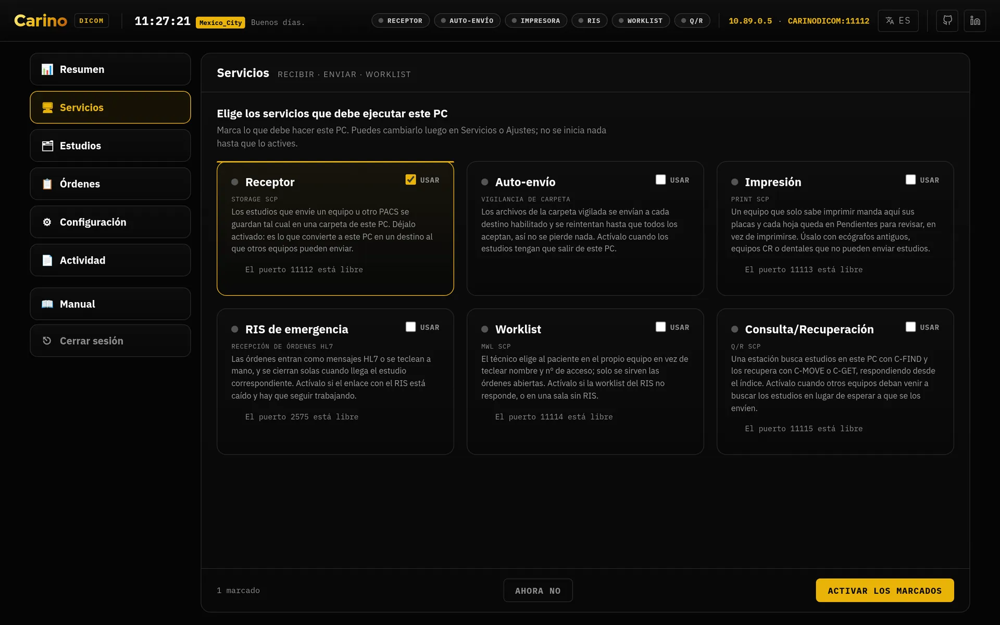
Sin interfaz gráfica
./run.sh init # crea config.json y sus carpetas
./run.sh init --token # además genera web.auth_token
./run.sh serve # panel en http://127.0.0.1:8042
./run.sh receive # solo el receptor
./run.sh send # solo el vigilante de carpeta / reenvío
./run.sh qr # solo Query/Retrieve
./run.sh mwl # solo la worklist
./run.sh ris # solo el receptor de órdenes HL7
./run.sh print # solo la impresora virtual
./run.sh echo --host 10.0.0.5 --port 104 --aet PACSREMOTOTodos los comandos aceptan -c / --config <ruta>. En Windows, run.ps1.
3. Cómo hago para…
Recetas cortas para los trabajos que salen en el día a día. Cada una termina diciendo cómo sabes que funcionó; si no funcionó, el capítulo siguiente es la lista de lo que hay que revisar.
…apuntar una modalidad aquí para guardar imágenes
- Abre Servicios. Si la tarjeta del Receptor dice que está parado, pulsa Iniciar.
- Lee la línea Apunta la modalidad a de la tarjeta: un AE title, una dirección IP y un
puerto (por defecto
CARINODICOMy11112). El botón de copiar que tiene al lado copia los tres. Si la máquina tiene más de una dirección, usa la que está en la red de la modalidad. - En la modalidad, añade un destino de almacenamiento —cada fabricante lo llama de una forma: nodo DICOM, archivo, «Enviar a» o «Store»— con esos tres valores. El AE title de la propia modalidad es el AE llamante; no hace falta escribirlo aquí.
- Si en Configuración → Ajustes → Este PACS hay AE titles en Aceptar solo estos AE, añade ahí el de la modalidad, o el receptor la rechazará.
- Lanza la prueba de conexión de la propia modalidad (suele llamarse Verify o Echo) y luego envía un estudio. Aparece en Estudios → Historial.
El botón Probar de la tarjeta comprueba el receptor desde esta misma máquina. Si Probar pasa y la modalidad sigue fallando, el problema está entre las dos: dirección, puerto, cortafuegos o la lista de AE permitidos.
…apuntar una modalidad aquí para imprimir
Para equipos cuya única salida es la placa. Carino se hace pasar por la impresora de placas y captura cada hoja para que la identifiques; no se imprime nada en papel.
- Abre Servicios y pulsa Iniciar en la tarjeta de Impresión.
- Lee su línea Apunta la modalidad a (por defecto
CARINOPRINT, la IP de esta máquina y el puerto11113). - En la modalidad, añade una impresora DICOM —a veces se llama impresora láser o de placas— con esos tres valores. La escala de grises siempre se ofrece; si la modalidad solo imprime en color, marca Aceptar también trabajos de impresión en color en Configuración → Ajustes → Impresión.
- Pulsa Enviar una impresión de prueba en la tarjeta. En unos segundos aparece en Estudios → Pendientes una hoja marcada TEST PRINT — safe to discard («impresión de prueba, se puede descartar»). Eso demuestra que el receptor funciona; descarta la hoja.
- Imprime una placa desde la modalidad. La tarjeta muestra Última impresión con el número de placas, el AE title de la modalidad y su dirección, el contador Capturadas sube, y la placa espera en Pendientes a que la apruebes (ver más abajo).
Guardar cada placa capturada como (en Impresión) decide en qué se convierte la placa cuando la apruebas. Muchos archivos y visores guardan un PDF pero no lo muestran; elige Imagen (Secondary Capture) si la placa tiene que leerse al otro lado.
El AE title de impresora que se teclea en la modalidad no se comprueba: aunque tenga una errata, imprime igual. Solo se filtra el AE title de la propia modalidad, y solo si rellenas Aceptar solo estos AE. Si una impresión falla, la tarjeta muestra Último problema; la tabla de problemas de impresión recoge cada mensaje y su arreglo.
…apuntar una modalidad aquí para que descargue su worklist
- Asegúrate de que hay órdenes. O bien el RIS manda órdenes HL7 al servicio RIS de
emergencia (puerto
2575), o bien alguien las teclea en Órdenes → Nueva orden. - En Configuración → Modalidades, registra la sala con el AE title exacto de su estación. Así el destino de una orden se elige de esa lista en vez de teclearse.
- Abre Servicios, pulsa Iniciar en la tarjeta de Worklist y lee su línea
Apunta la modalidad a (por defecto
CARINOMWLy el puerto11114). - En la modalidad, configura el proveedor de worklist (MWL, «HIS/RIS» o «servidor de worklist») con esos valores y haz la consulta.
Una orden sin destino aparece en todas las estaciones; una orden con destino aparece solo en la estación cuyo AE title coincide exactamente. Cuando el estudio vuelve, se concilia con su orden por número de accession y la orden se cierra sola.
…aprobar una placa pendiente
Las placas capturadas, y los PDF o imágenes encontrados junto a un estudio, esperan en Estudios → Pendientes. El contador 📎 junto a Estudios dice cuántos hay.
- Abre la Vista previa y mira la hoja.
- Si el paciente tiene una orden abierta, pulsa Asociar a una orden… y elígela. El nombre, el ID de paciente, el accession y el estudio salen de la orden, y la orden se cierra como capturada.
- Si no, teclea tú la identidad. ID de paciente y Nombre del paciente son obligatorios; el accession, la fecha y la descripción, muy recomendables.
- Si el elemento llegó junto a un estudio y has cambiado el paciente, elige a qué pertenece: Adjuntar al estudio original solo si ese estudio es de verdad de este paciente; si no, Estudio nuevo. Elegir mal archiva la hoja de un paciente dentro del estudio de otro.
- Pulsa Aprobar y enviar. Se convierte a DICOM y se reenvía como cualquier otro estudio.
No hay deshacer: una vez aprobado, el fichero original desaparece de Pendientes y la copia DICOM ya va de camino. Un error se corrige en el archivo. Descartar quita un elemento sin enviarlo.
…arreglar un reenvío atascado
Abre Estudios → Atascados (el contador ⚠ junto a Estudios). Las filas se agrupan por estudio, con el paciente, el accession y la descripción, y se reparten en tres clases:
- Reintentando automáticamente: un destino rechazó la conexión o no contestó. Lee el error de la fila: dice si el remoto nos rechazó (y por qué, por ejemplo «add CARINOSCU to the remote's allowed AE titles», es decir, añade CARINOSCU a los AE permitidos del remoto), si cortó la conexión o si nunca contestó. Arregla eso, pulsa Echo en la fila del destino en Configuración → Destinos y luego Reintentar ahora.
- Retenido: no se envía nada: una retención por anonimización. Ningún temporizador la libera; usa los dos botones de la fila y mira Anonimización al reenviar.
- Sin destino al que reintentar: los ficheros van a un destino que se borró o se desactivó. Vuelve a activarlo, o pulsa Enviar a… y elige otro destino, o Quitar de la cola (pregunta antes) para dar la pérdida por buena.
…averiguar por qué falló algo
- Mira la tarjeta del servicio. Cada listener muestra Último problema cuando algo salió mal; haz clic y se abre el registro ya filtrado por ese servicio.
- En Actividad → Registro, usa los chips de servicio (recepción, envío, impresión, worklist, Q/R, RIS…), Solo errores y avisos y el filtro de texto: un AE title, una dirección IP o un número de accession lo acotan enseguida.
- Para pasarle el problema a otra persona, copia las líneas visibles o descarga el registro de un día entero.
- Pulsa Probar en la tarjeta. Si la prueba pasa desde esta máquina y la modalidad sigue fallando, mira la red que hay entre las dos.
- Si cambió un ajuste y nadie sabe quién, Actividad → Auditoría dice la persona y las secciones que cambió.
4. Cuando algo va mal
Primero el síntoma, luego dónde mirar, luego el arreglo. Casi todas las filas empiezan en los mismos dos sitios: la tarjeta del servicio en Servicios (su Último problema) y Actividad → Registro. Las líneas del registro salen del motor en inglés y se citan aquí tal cual, para que las encuentres con el filtro de texto.
Envío, recepción y worklist
| Síntoma | Dónde mirar | Arreglo |
|---|---|---|
| La modalidad no consigue enviarnos nada | Tarjeta del receptor; líneas del registro
que empiezan por Receiver: refused | its AE title is not in the allowed
list: añade el AE de la modalidad en Aceptar solo estos AE, o vacía la lista.
Nada en el registro: la conexión nunca llegó; revisa la IP y el puerto en la modalidad, el
cortafuegos y que la tarjeta esté en marcha. Probar en la tarjeta separa «esta máquina»
de «la red». |
| La modalidad envió, pero el estudio no está en Historial | Registro, chip de recepción; Espacio libre en Resumen | Refused C-STORE — low disk
space: libera disco o baja scp.min_free_gb. La modalidad puede reenviar en
cuanto haya sitio. |
| Una tarjeta está en ámbar: «activado pero no está en marcha» | El registro del momento en que arrancó | Otro programa, u otro servicio de aquí, ocupa su puerto. Cambia el puerto o para el otro programa y pulsa Iniciar. |
| Los estudios no llegan al PACS principal | Estudios → Atascados | El error de la fila dice qué hizo el PACS: rejected
permanently: calling AE title not recognised → añade nuestro AE de envío (por defecto
CARINOSCU) en el PACS; connection refused → puerto equivocado o el PACS
está parado; no reply → equipo apagado o cortafuegos; aborted → a
menudo un desajuste de TLS. |
| A un destino no se le envía nada y nada se reintenta | Atascados, sección «Retenido» | Una retención por anonimización: ver Anonimización al reenviar. |
| La modalidad no ve su worklist | Tarjeta de Worklist; registro, chip de worklist | MWL: refused: añade su AE a la lista de permitidos de la worklist.
Ninguna consulta en el registro: IP, puerto o AE equivocados en la modalidad. La consulta llega
pero la lista sale vacía: el AE de destino de la orden no coincide exactamente con la estación;
corrígelo en Modalidades. |
| El RIS del propio hospital no le da su lista a la modalidad | Configuración → Modalidades → Probar worklist | Ver Sonda de worklist; las respuestas aparecen en Actividad → Sondas de worklist. |
| No aparecen las órdenes HL7 del RIS | Tarjeta del RIS de emergencia; registro, chip de RIS | Comprueba que el RIS envía a esta IP en el puerto 2575, y que su
dirección está en ris.allowed_hosts si esa lista está rellena. |
| Se cerró la sesión de todo el mundo | — | Es normal tras un reinicio: las sesiones viven en memoria a propósito. Vuelve a entrar. |
| El panel deja de responder o sus números dejan de cambiar | Recarga la página | Si no vuelve, el motor no contesta: comprueba que el servicio o el contenedor
está en marcha (systemctl status carino-pacs, docker compose ps) y
lee su log. |
El contenedor muere con EACCES | docker compose logs pacs | El
contenedor no puede escribir en ./data: pon PACS_UID/PACS_GID
en .env y reconstruye (ver Docker más arriba). |
| El correo de failover está activado, pero no le llegó a nadie | Configuración → Personas | El correo va a los perfiles que tienen dirección, no a una lista. Ver Avisos. |
Impresión
Cada rechazo y cada fallo del receptor de impresión es una línea del registro (el chip de impresión), cuenta en los Errores de la tarjeta y aparece como su Último problema. Un trabajo correcto aparece como Última impresión.
| Línea del registro o síntoma | Qué significa | Arreglo |
|---|---|---|
Print: refused X @ ip — its AE title is not in the allowed list (…) | El AE title de la modalidad no está en la lista del receptor de impresión. | Añádelo en Impresión → Aceptar solo estos AE, o vacía la lista. |
Print: refused X @ ip — too many connections at once | La modalidad, o varias, abrieron más conexiones de las que el receptor acepta a la vez. | Deja que terminen los trabajos y vuelve a imprimir; si se repite, imprime de uno en uno. |
Print: X @ ip asked for Basic Color Print Management…, which this printer does not
offer | La modalidad quiere color y el color está desactivado. | Marca Aceptar también trabajos de impresión en color. No cuenta como error: una modalidad que ofrece las dos cosas imprime en escala de grises. |
Print from X: nothing to print — no film was created first, … N film(s)
were created but no image was sent into them, … the film it named (…) was never
created here | La modalidad se saltó un paso de la secuencia de impresión. Se le contestó «página vacía» (un aviso, 0xB603). | Es un ajuste o un fallo del lado de la modalidad: revisa su configuración de impresora (formato de placa, número de imágenes) y vuelve a imprimir. |
Print: X sent an image for a box this printer never handed out (…); refused | La modalidad hizo referencia a una casilla de imagen de otra sesión. | Repite la impresión desde la modalidad; si se repite, repórtalo con la línea del registro. |
Print: could not read image N from X (…); it is left blank on the film | Una imagen usaba un formato de píxel que el receptor no lee; el resto de la hoja se conservó. | Cambia los ajustes de impresión de la modalidad (profundidad de bits, color) si los ofrece; si no, reporta la línea. |
Failed to render or queue the print job from X: … | La placa llegó, pero no se pudo escribir (estado 0x0110). | Comprueba el espacio libre en disco y que la carpeta de
pendientes (scu.pending_dir) admite escritura. |
Otras líneas que empiezan por Print: … | Mensajes de la propia biblioteca DICOM para esa conexión de impresión, pasados tal cual. | Léelas junto con la línea anterior; repórtalas si no quedan claras. |
| Nada de nada en el registro | La conexión nunca llegó. | ¿La tarjeta está en
marcha (no en ámbar)? ¿La modalidad usa la IP de esta máquina y el puerto 11113?
¿Hay un cortafuegos por medio? Enviar una impresión de prueba en la tarjeta demuestra que
este lado funciona. |
Dos cosas que no son la causa: el AE title de impresora tecleado en la modalidad (no se comprueba) y que la modalidad deje a la impresora los números de la sesión y de la placa (se crean aquí si faltan). Una Presentation LUT se acepta y se ignora, y una modalidad que primero pregunta la configuración de la impresora recibe respuesta.
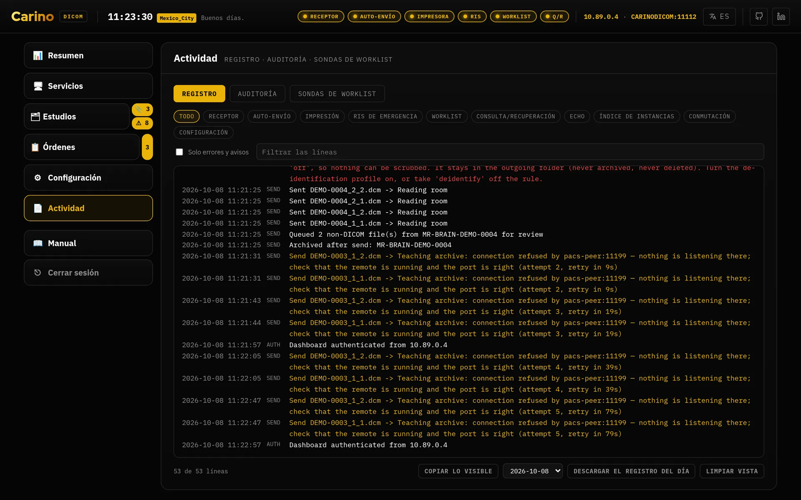
5. El modelo de seguridad y la regla del token
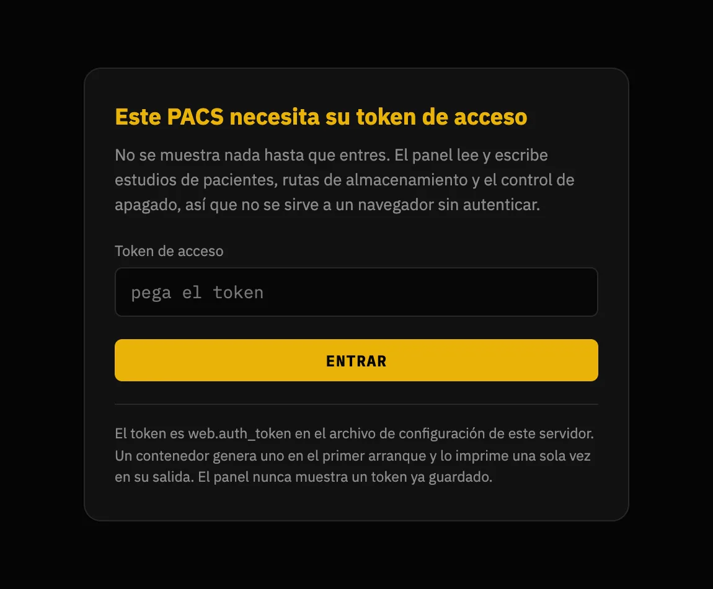
Empecemos por lo importante: el panel es la llave del archivo. Quien lo abre puede leer todos los estudios guardados, descargar los ficheros DICOM, cambiar cualquier ajuste, arrancar y parar servicios, borrar estudios y apagar el servidor. De fábrica hay un único secreto compartido y quien lo tiene lo puede todo: los perfiles son opcionales y están apagados hasta que usted los active. Al activarlos, cada persona entra como sí misma, con sus propios permisos, su propia vista de los identificadores del paciente y su propio nombre en la auditoría; el token compartido sigue funcionando como administrador, así que nada de lo que ya lo usa se rompe.

*** allí donde habría aparecido.El menú se dibuja según lo que cada perfil puede hacer. Una fila aparece si el perfil tiene
alguno de los permisos que necesitan sus pestañas, y después cada pestaña se comprueba por su
cuenta: el perfil Radiólogo, que tiene routing.read pero no
config.read, abre Configuración y ve Destinos y Rutas,
pero no Ajustes, que es donde están el token de la API y el apagado del servidor.
Recepción, que no tiene ninguno de los tres permisos, no ve la fila de
Configuración.
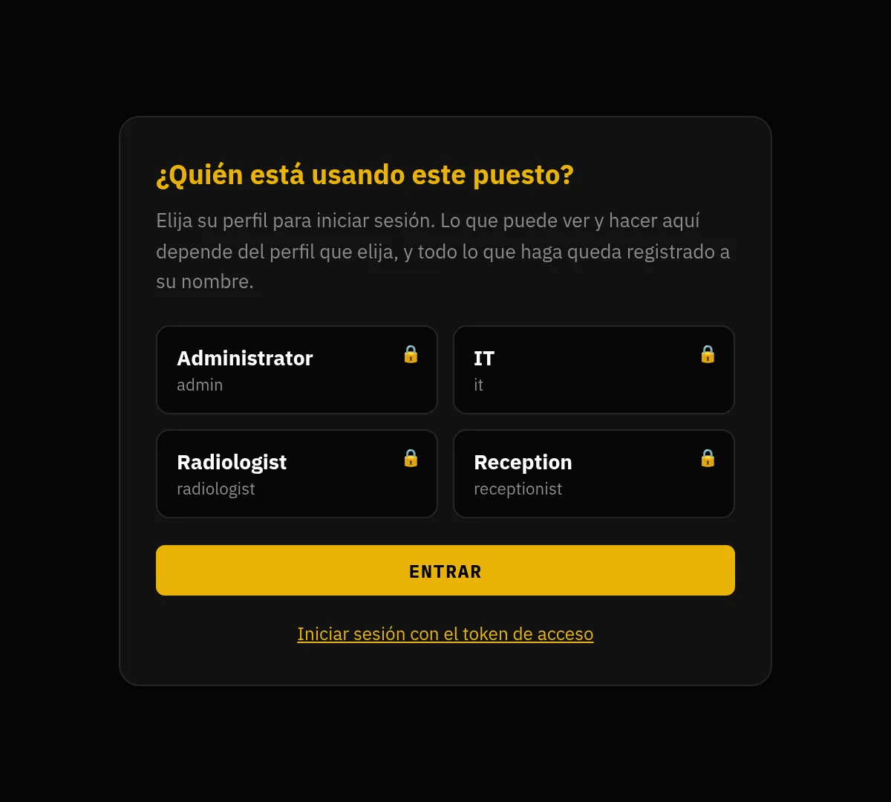
users.list_profiles está activo: publicar la lista del personal a quien pueda alcanzar el puerto es una divulgación real, y es decisión suya. El token sigue funcionando, plegado debajo, porque es la vuelta a casa cuando alguien se queda fuera.La regla
web.auth_token vacío solo se admite mientras web.host sea
loopback. Si web.host es cualquier otra cosa —0.0.0.0, una IP de la
red, un nombre— y el token está vacío, el servidor se niega a arrancar. Esa
negativa es una función del programa, no un error que haya que rodear.
La razón es concreta. Sin autenticación, en 127.0.0.1, el sistema operativo es el
control de acceso: solo un proceso de esa misma máquina puede hablar con la API. Es defendible.
Pero web.host lo configura el operador, y el día que alguien lo cambia a
0.0.0.0 para «poder entrar desde el otro PC» —con prisa, un martes, sin pensar en
seguridad— esa misma API le entrega a cualquier vecino de la red la lista de estudios, las rutas de
almacenamiento, los bytes DICOM y /api/shutdown. La regla existe porque ese cambio se
hace en diez segundos y sus consecuencias duran años.
Todo contenedor está siempre en ese caso: un contenedor publica en
0.0.0.0 por construcción. Por eso la imagen genera un token de 256 bits en el primer
arranque si no le das uno — y lo imprime. Lo que nunca hace es generarlo en silencio: un
secreto que nadie ve es un secreto que nadie rota.
Cómo generar y entregar el token
./run.sh init --token # lo escribe en config.json
python3 -c "import secrets; print(secrets.token_urlsafe(32))"
openssl rand -base64 32El servidor acepta la credencial de tres maneras:
Authorization: Bearer <token>X-Carino-Token: <token>- una cookie de sesión que emite
POST /api/login
La cookie existe para que el panel pida el token una vez en lugar de guardarlo en JavaScript, donde lo lee cualquier XSS y cualquier extensión del navegador. La cookie no lleva el token: lleva un HMAC calculado con un secreto generado al arrancar y guardado solo en memoria. Por eso un reinicio cierra todas las sesiones — es el precio correcto para un equipo de un solo operador: nada que robar en disco, y como mucho hay que volver a teclear el token una vez por turno.
El panel habla HTTP en claro. No trae TLS propio. Si lo publicas más allá de loopback, ponlo detrás de un proxy inverso que termine HTTPS. Un token enviado por HTTP sin cifrar en una red compartida es un token regalado.
El lado DICOM
allowed_aets— lista blanca de AE titles que pueden asociarse. Vacía significa «acepta a cualquiera». Es un filtro útil, no una autenticación: DICOM no autentica al llamante.- DICOM-TLS — disponible en ambos lados y de forma independiente, incluido TLS
mutuo con certificado de cliente. Usa el mismo puerto: un par en claro no puede hablar
con un receptor TLS, ni al revés. TLS cifra y autentica el transporte, no la
aplicación: combínalo con
allowed_aetso con certificados de cliente para tener control de acceso de verdad. - Cortafuegos — los listeners DICOM escuchan en
0.0.0.0por defecto (aunque todo listener está apagado hasta que lo enciendes). Eso es correcto para algo que las modalidades tienen que alcanzar, y significa que debes limitarlo por cortafuegos a la subred de las modalidades.
Lo que el modelo no protege
- Los perfiles están apagados hasta que usted los active. Hasta entonces hay un solo secreto compartido para todo el equipo, sin cuentas, sin roles y sin permisos. Ese sigue siendo el valor por defecto, porque activarlos en silencio durante una actualización rompería todos los clientes automáticos del sitio.
- No hay integración con su directorio. Las cuentas viven en el equipo. No hay LDAP, ni Active Directory, ni inicio de sesión único, ni forma de desactivar a alguien de forma centralizada cuando se va.
- La auditoría se puede truncar. Detecta un registro editado, uno eliminado del medio, registros reordenados y un fichero cortado a mitad de línea: cada caso rompe un resumen y Comprobar integridad dice en qué registro y por qué. No detecta que se borren los últimos registros, porque lo que queda es una cadena válida de verdad, ni impide que alguien con permiso de escritura sobre la carpeta la reescriba entera. Si necesita no repudio, copie la cabecera de la cadena a un sitio donde esta máquina no pueda escribir y compárela después.
- No hay cifrado en reposo. Los estudios son ficheros DICOM normales, el índice
sqlite guarda nombres e identificadores en claro, las órdenes son JSON y
config.jsoncontiene el token en texto plano. Cifra el volumen por debajo (LUKS, BitLocker, FileVault) y restringe los permisos del directorio de datos. - El listener HL7/MLLP no tiene ni TLS ni credenciales. Es un socket TCP con
trama MLLP. Su único control es
allowed_hosts, que comprueba la dirección del par y por tanto es suplantable. Quien pueda abrir una conexión a ese puerto puede inyectar órdenes que aparecerán en la worklist. Átalo a un segmento clínico de confianza y ponle cortafuegos. - La anonimización no toca los píxeles. Ver el servicio correspondiente más abajo: los datos quemados en la imagen sobreviven a todos los perfiles.
Copias de seguridad. El índice sqlite es una caché y se reconstruye solo; las imágenes no. Respalda los directorios de almacenamiento, y compruébalo restaurando alguna vez.
Sin telemetría, con una excepción que activas tú. El motor no envía nada a ninguna parte: ni analítica, ni informes de errores, ni contadores de uso, ni scripts de terceros cargados en tiempo de ejecución. Sus únicas conexiones salientes son las asociaciones DICOM y los ACK HL7 que tú configuraste, hacia los pares que tú nombraste — y un despliegue con Docker, Podman o systemd es eso y nada más, que es la frase que importa, porque esa es la forma que está en el servicio de imagen con los datos de los pacientes encima. La app de escritorio puede además comprobar si se ha publicado una versión más nueva, y solo si dijiste que sí a la pregunta que hace una vez, en el primer arranque; viene desactivada y la bandeja del sistema vuelve a desactivarla. Esa comprobación es una sola petición HTTPS al día a la lista de releases de GitHub, con un User-Agent y nada más — sin identificadores, sin contadores, sin configuración, sin datos de pacientes —, de modo que lo que GitHub llega a saber es la dirección IP de esta máquina y aproximadamente cuándo se abrió la app, y eso es todo. No se descarga nada ni se instala nada solo. Un cambio que enviara algo más, o que enviara algo que nadie hubiera aceptado, se trataría como una vulnerabilidad.
![La pestaña Auditoría de Actividad: una línea con el número de archivos, su tamaño y el resumen de la cabecera de la cadena; una fila de filtros —todos, todas las acciones y una casilla de solo fallidas o rechazadas— con los botones «Comprobar integridad» y «Exportar» a su derecha; y filas con marca de tiempo, la más reciente arriba, todas «Hecho» y con el detalle plegado: el motor iniciando sesión con el token de acceso, una fila por entrada, y debajo «Probó una worklist» de US_ROOM_2, hecha con el token de acceso.](../img/es/audit.webp)
6. Los servicios, uno por uno
Todo lo que abre un puerto viene apagado. La pregunta correcta no es «¿qué puede hacer?», sino «¿qué necesita hacer esta máquina?». Cada servicio encendido es un puerto abierto más. El índice de abajo es la única excepción: arranca solo, porque es una caché sqlite local que no abre ningún puerto.
Cada servicio tiene un solo interruptor. Iniciar en su tarjeta lo arranca y lo deja encendido tras un reinicio; Parar pregunta antes, lo para y lo deja apagado. En Configuración → Ajustes ese mismo interruptor es la casilla Ejecutar este servicio (también al arrancar), así que la tarjeta y el ajuste nunca pueden contradecirse. Guardar los ajustes reinicia solo los servicios cuyos ajustes propios cambiaron, y el panel dice cuáles.

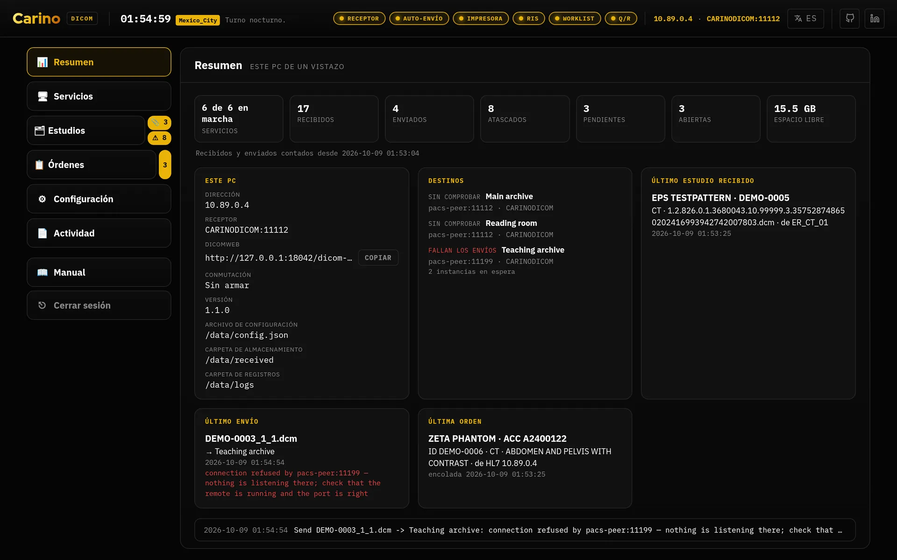
Receptor — Storage SCP
Puerto 11112 · C-STORE, C-ECHO
- Qué hace
- Acepta estudios enviados por las modalidades y los archiva en disco, opcionalmente organizados por Paciente / Estudio / Serie. Acepta todas las sintaxis de transferencia y guarda lo comprimido tal cual: no hay transcodificación, así que ningún dato se altera al entrar.
- Cuándo activarlo
- Siempre que algo tenga que enviarle imágenes: modalidades, otro PACS, una estación. Es el servicio central.
- Cuándo no
- Si esta máquina solo reenvía lo que otro deja en una carpeta.
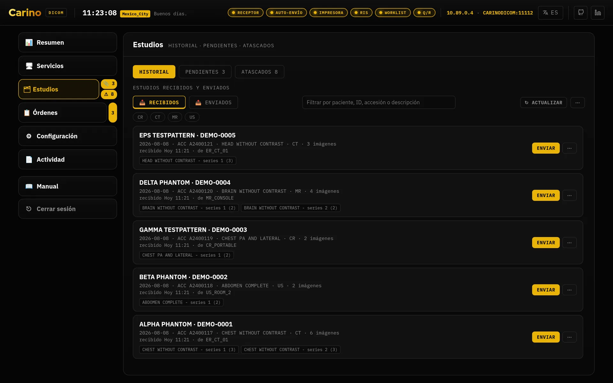
Auto-envío — Storage SCU y reglas de enrutamiento
Cliente saliente · C-STORE
- Qué hace
- Vigila una carpeta y reenvía cada fichero nuevo a los destinos que correspondan. Un fichero solo se envía cuando está estable (su tamaño no ha cambiado entre dos pasadas), así que nunca se reenvía un fichero a medio escribir. El progreso se lleva por destino: se da por terminado cuando todos los destinos habilitados lo han aceptado, y los que fallan se reintentan en la siguiente pasada. Al terminar puede conservar, mover o borrar el original.
- Reglas
- Con el enrutamiento activado, una regla decide destinos según modalidad, AE title de origen,
estación, ID de paciente o descripción del estudio (comodines
*y?, sin distinguir mayúsculas). Ejemplo: la TC procedente deER_*al archivo docente, anonimizada. - La garantía
- Un estudio nunca puede quedarse sin destino. Si el enrutamiento está apagado, si ninguna regla coincide, si la cabecera no se puede leer o si una regla nombra un destino que ya no existe, el fichero va a todos los destinos habilitados. Enviar de más molesta al operador; enviar de menos pierde una imagen.
- La única excepción
- Una regla que pide anonimizar para un destino, cuando la limpieza no se puede hacer de
verdad, deja ese destino retenido: no se le envía nada, en vez de enviarle
el estudio identificado. Hay dos cosas que impiden la limpieza —que el perfil esté en
off, o que el perfil esté activo pero no se pueda construir ningún anonimizador con los ajustes actuales— y se arreglan de forma distinta. En ambos casos no se pierde nada: ver Anonimización al reenviar más abajo. - Cuándo activarlo
- Cuando esta máquina tenga que entregar imágenes a otro sistema: reenviar al PACS central, alimentar una estación de lectura, sacar copias a un archivo docente.
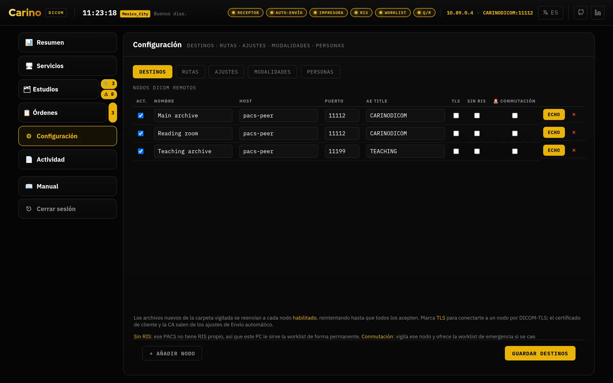
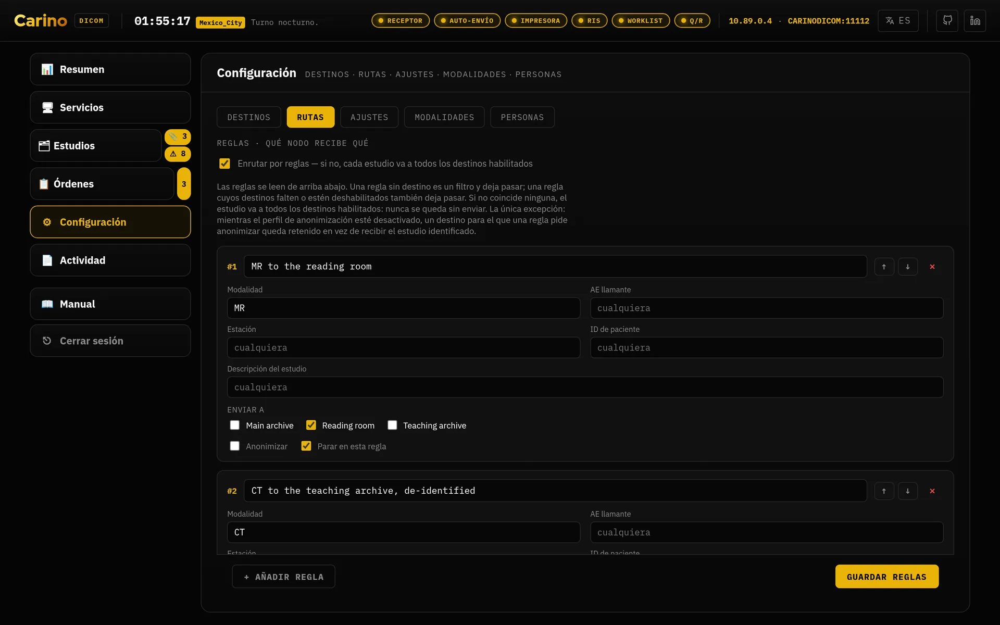
![La pestaña Atascados de Estudios, bajo un aviso de que 8 archivos necesitan atención y con dos secciones. «Reintentando automáticamente»: el destino Teaching archive con dos instancias del estudio de CR en espera, su último error en rojo, un botón «Reintentar ahora» y la cuenta atrás del próximo intento. «Retenido: no se envía nada»: el destino Teaching archive, etiquetado «perfil desactivado», con seis instancias del estudio de TC en espera bajo su paciente y su número de accession, la edición que las libera, los botones «Ajustes de anonimización» y «La regla que lo pide», y «Enviar a…» y «Quitar de la cola».](../img/es/stuck.webp)
La pestaña puede dibujar una tercera sección, Sin destino al que reintentar, que aquí no sale porque en esta máquina no hay ninguno: son archivos enviados a un nombre que ya no es un destino habilitado. No queda ningún nodo al que llamar, así que nada los reintenta y ninguna edición de anonimización los mueve; cada fila dice qué pasará con ellos. Se arregla en Destinos, volviendo a habilitar ese destino con el mismo nombre o corrigiendo el nombre en la regla que los mandó allí; o desde la propia fila, con Enviar a… otro destino, o con Quitar de la cola para dar la pérdida por buena. Hasta entonces se quedan en la carpeta de salida, sin archivarse ni borrarse.
Anonimización al reenviar
Perfil PS3.15 Anexo E · se aplica solo a la copia que sale
- Qué hace
- Aplica el Basic Application Level Confidentiality Profile al objeto que se envía,
declarando en
(0012,0064)exactamente qué opciones de retención se usaron, para que quien lo reciba pueda comprobar qué se conservó. El original archivado no se reescribe jamás: esa asimetría es la idea entera. - Perfiles
basicconserva fechas (completas o desplazadas), características del paciente, identidad del equipo e institución.strictquita identidad de equipo e institución y elimina los atributos privados aunque pidas conservarlos.- Cuándo activarlo
- Cuando las imágenes salgan del entorno clínico: docencia, investigación, un proveedor, una segunda opinión externa.
- Al desactivarlo
- El perfil decide si se limpia algo; la casilla anonimizar de una regla decide qué
destinos reciben la copia limpia. Si pones el perfil en
offmientras una regla sigue pidiéndolo, Carino retiene ese destino en vez de mandarle una copia identificada a un nodo cuyo responsable cree que no recibe ninguna.
Retenido, no enviado; y es la respuesta cuando los estudios dejan de moverse. Un destino marcado como anonimizar por una regla no recibe nada siempre que la limpieza no se pueda hacer de verdad. Se aplaza la entrega, no se revela la identidad: un estudio que espera en disco se libera con una edición, mientras que un nombre que ya llegó a un nodo externo no se recupera con ninguna.
Hay dos motivos por los que la limpieza no se puede hacer, y no se arreglan igual. Cada retención guarda cuál de los dos es, y la pestaña Atascados imprime el remedio del motivo que quedó registrado en vez de adivinarlo:
- El perfil está en
offmientras una regla sigue pidiendo la limpieza. Pon el perfil enbasicostricty la siguiente pasada de auto-envío los libera. - El perfil está activo, pero no se pudo construir ningún anonimizador con los ajustes actuales, así que sigue sin haber con qué limpiar. El fallo que lo impidió está en la pestaña Registro de Actividad, en el canal de envío: arréglalo ahí. Apagar el perfil no libera esta retención: no libera nada, solo cambia cuál de las dos mitades está impidiendo la limpieza.
Las dos ediciones viven en Configuración, una en Ajustes y otra en Rutas, y cada fila retenida lleva un botón hacia cada una: Ajustes de anonimización abre la pestaña Ajustes y La regla que lo pide abre la pestaña Rutas. Los dos abren la pestaña y nada más: ninguno baja hasta la regla concreta ni la señala. Aun así la reparación es más corta que antes: se lee el motivo en la fila y se pulsa el botón, sin ir a buscar la pantalla a mano.
Quitar la marca anonimizar de la regla libera cualquiera de las dos retenciones, y las libera identificadas, que es justo lo que la retención existe para evitar. Haz esa edición solo si de verdad ese destino ya no debe recibir datos anonimizados.
No se pierde nada y nada de esto es silencioso. Los estudios se quedan en la carpeta de salida —nunca se archivan ni se borran—, el resto de destinos del mismo estudio lo siguen recibiendo, la pestaña Registro lo saca como error nombrando el estudio, el destino retenido y el motivo, el bloque de anonimización de Ajustes también lo nombra, y el contador ⚠ de la fila Estudios cuenta esos ficheros y abre Atascados al pulsarlo. Nada libera una retención por sí solo: ningún temporizador la agota y nada la reintenta.
No limpia los píxeles. Los datos del paciente quemados en la imagen —la cabecera que imprime un ecógrafo o una captura secundaria— sobreviven a todos los perfiles, y son la forma más común de que datos «anonimizados» salgan del hospital con nombre y apellidos. La opción Clean Pixel Data (113101) no se declara a propósito, porque no se hace. Nada dentro del programa puede detectar esa fuga por ti: alguien tiene que mirar las imágenes. El texto libre dentro de informes estructurados tampoco se analiza.
Índice
sqlite · index.db
- Qué hace
- Mantiene una fila por fichero almacenado y deriva de ahí las respuestas de paciente, estudio y serie, para que un resumen de estudio nunca pueda desfasarse de las instancias que resume. Es la capa de consulta que hay debajo de Query/Retrieve y de DICOMweb.
- Cuándo activarlo
- Siempre que uses Query/Retrieve o DICOMweb. Es la única dependencia de ambos.
- Qué garantiza
- El índice es una caché, nunca la fuente de verdad. Perderlo cuesta un reescaneo, nunca una imagen.
Query/Retrieve — C-FIND, C-MOVE, C-GET
Puerto 11115 · Patient Root y Study Root
- Qué hace
- Permite que otro sistema pregunte «¿qué estudios tienes de este paciente?» y luego «mándamelos a mí / a esa estación». Es la mitad del PACS con la que puede hablar el equipamiento antiguo: un ecógrafo de 2009 o un digitalizador de CR nunca hablarán DICOMweb, pero sí DIMSE.
- Cuándo activarlo
- Cuando estaciones de trabajo o modalidades tengan que traerse estudios de aquí, o cuando hagas de archivo temporal durante una caída del PACS principal.
- Qué garantiza
- Un C-MOVE nunca inventa la lista de instancias: la resuelve por el índice. Lo que el índice conoce pero no se puede leer del disco se cuenta como sub-operación fallida y se nombra en la lista de UIDs fallidos. Nunca se descuenta en silencio: un C-MOVE que informa de éxito enviando menos imágenes de las que encontró es el peor fallo posible de este software.
DICOMweb — QIDO-RS, WADO-RS, STOW-RS
HTTP, bajo /dicom-web en el puerto del panel
- Qué hace
- Deja que visores modernos (OHIF, Weasis y compañía) consulten, descarguen y suban estudios por HTTP sin negociar una asociación DICOM. Lo que se sube por STOW-RS pasa por el mismo archivado que un C-STORE, así que un estudio enviado desde un visor es indistinguible de uno enviado por una modalidad.
- Cuándo activarlo
- Cuando quieras enchufar un visor web al archivo. Recuerda que el token protege también estas rutas.
- CORS
cors_originsse compara de forma exacta (esquema + host + puerto) y viene vacía, así que no se devuelve nada a un origen que no esté en la lista. No hay sintaxis de patrones, pero un*literal sí se respeta, y solo porque lo escribiste tú: a partir de ahí se refleja cualquier origen y cualquier página que visite el operador podría leer el archivo desde esta máquina. Mejor nombra el visor.- Qué no hace
/rendered,/thumbnail, URIs de bulkdata y la conversión entre sintaxis de transferencia no están implementados y responden406. Un visor a medias es peor que una función ausente: lo que no se puede producir no se finge.
Modality Worklist (MWL)
Puerto 11114 · C-FIND de worklist
- Qué hace
- Sirve órdenes a las modalidades para que el técnico no teclee los datos del paciente a mano. Cada orden lleva un Study Instance UID pregenerado que se graba en el estudio, de modo que lo que la modalidad devuelve concilia exactamente con su orden. El campo AE de destino dirige una orden a una estación concreta; en blanco, la ven todas.
- Cuándo activarlo
- Cuando el RIS no llega hasta las modalidades: porque está caído, porque el destino sencillamente no tiene RIS, o para probar un flujo RIS→PACS sin un RIS real.
Modalidades registradas
Sin puerto · Configuración → Modalidades
- Qué hace
- La lista de salas a las que sirve este equipo: un nombre que una persona reconoce, el AE title de la estación que la worklist compara exactamente, el código de modalidad y, si quieres, el nombre de estación. No es una lista de permisos: un equipo no necesita estar aquí para enviar imágenes, y estar aquí tampoco se lo permite. Lo que se gana es que el destino de una orden pase a elegirse de una lista en vez de teclearse, y es la lista de la que la sonda de worklist toma prestado un AE title.
- Cuándo rellenarla
- Cuando sirves la worklist o tecleas órdenes a mano. Mientras no haya ninguna estación registrada, el destino de una orden se escribe a mano y una errata no se puede detectar.
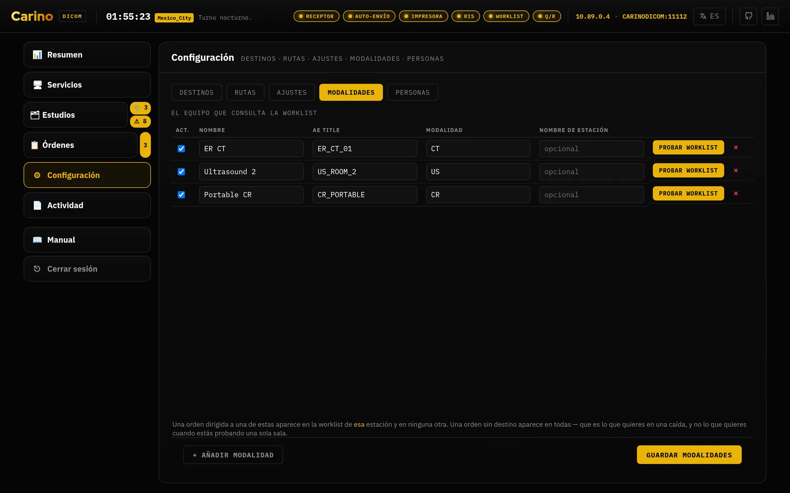
Sonda de worklist — preguntarle al otro RIS
Cliente saliente · C-FIND de worklist · Configuración → Modalidades
- Qué hace
- Responde a «¿por qué este equipo no ve su lista?» sin tocar el equipo. Dale una dirección al RIS real del hospital —o a su bróker— en Ajustes y pulsa Probar worklist en la fila de una modalidad: Carino le hace a ese RIS la pregunta que haría esa modalidad, usando su mismo AE title, y archiva cada respuesta en Actividad → Sondas de worklist. Una ejecución hace la misma pregunta cinco veces, ensanchándola de clave en clave —estación, fecha y modalidad; luego sin la modalidad; sin la fecha; sin la estación—, porque lo que localiza el fallo es la diferencia entre las respuestas. Si no vuelve nada en ninguna, el otro RIS no tiene nada programado; si sólo la más estrecha vuelve vacía, el que está mal es el AE title de la estación.
- Antes de pulsar
- Saca la modalidad de la red primero. La sonda llama como esa modalidad, y dos cosas respondiendo al mismo AE title en un mismo RIS es un lío que luego hay que ir a deshacer.
- Qué no es
- Ni un servicio, ni una agenda, ni una cola. Lo que hay en Sondas de worklist es el registro de lo que contestó otro: esas órdenes no se sirven nunca en la worklist de este equipo, que no reclama ninguna. Limpiar vacía ese registro y nada más.
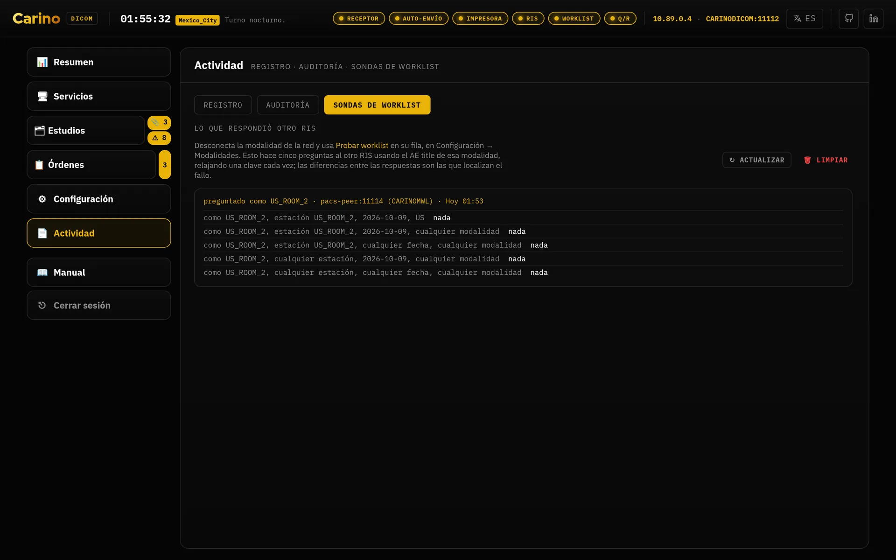
RIS de emergencia — órdenes HL7
Puerto 2575 · HL7 ORM^O01 sobre MLLP
- Qué hace
- Recibe órdenes HL7 por MLLP y también permite teclearlas a mano en el panel cuando no queda nada vivo aguas arriba. Cuando el estudio vuelve por C-STORE, se concilia con su orden por número de accession (con el ID de paciente como reserva) y la orden se cierra y se archiva para la traza — nunca se borra.
- Cuándo activarlo
- Durante una caída del RIS, o en pruebas de integración.
- Qué garantiza
- La entrega de imágenes nunca depende de que exista una orden. Un estudio sin orden que le corresponda se guarda y se reenvía igual; la orden simplemente queda abierta para conciliarla a mano.
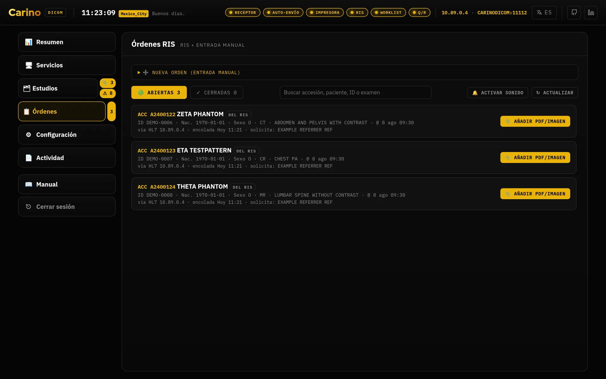
Sin TLS y sin credenciales. Ver el apartado de seguridad: quien pueda abrir un socket a ese puerto puede inyectar órdenes. Solo en red clínica de confianza y con cortafuegos.
Failover de emergencia
Vigilancia por C-ECHO del PACS marcado como principal
- Qué hace
- Marca un destino como principal y arma el monitor: Carino le hace C-ECHO periódicamente y observa los fallos de reenvío. Si sigue inalcanzable pasado el umbral, avisa y ofrece activar el RIS de emergencia. Al activarlo arranca la worklist local para que los técnicos sigan estudiando, retiene lo que llega durante la caída y lo reenvía automáticamente cuando el principal vuelve. Vuelves a la normalidad cuando tú lo decides.
- Cuándo activarlo
- En la máquina que hace de pasarela hacia un PACS del que dependes. Es la razón por la que existe la palabra «continuidad» en la primera línea de este manual.
Avisos — webhook y correo
Sólo saliente · webhook HTTP, SMTP
- Qué hace
- Llega a quien no tiene el panel abierto. El aviso en pantalla basta para quien está mirando un envío y no sirve para el caso que justifica esto: el principal se cae a las 03:00 y el radiólogo de guardia no está delante de ninguna pantalla. Dos canales, independientes entre sí, los dos muertos mientras el interruptor general esté apagado.
- Qué envía
- Sólo eventos de failover: disparado, activado, resuelto. Ninguna otra parte del equipo genera un aviso. Esto no es un sistema de alertas general y no se convierte en uno por encenderlo.
- Quién recibe el correo
- Perfiles, no direcciones. El mensaje va a cada perfil activo al que el failover esté configurado para avisar y que tenga una dirección de correo puesta. Con SMTP configurado y ninguna dirección en ningún perfil no sale nada, y sin ruido: eso es lo primero que hay que mirar cuando «el correo está activado y no se enteró nadie». El texto cambia según el papel de cada uno, y la dirección del destino que falla sólo aparece para quien ya puede ver la tabla de destinos: un correo sale del edificio y no se puede recuperar.
- Qué no hará nunca
- Retrasar ni romper aquello de lo que informa. Cada envío se entrega a un hilo aparte, la cola tiene tope —se descarta lo más viejo y el descarte se cuenta, porque un «el principal está caído» entregado después de la recuperación es peor que el silencio— y un fallo se convierte en un contador y una línea de registro, no en una excepción. Enviados, fallidos, descartados, en cola y el último error se pueden leer, así que «activado y no ha entregado nunca nada» se ve antes de la caída que depende de ello. Pruébalo una tarde tranquila, no durante una.
- Dónde se configura
- Todavía no en el panel: en la sección
notifydeconfig.json(la URL del webhook, el servidor SMTP y el interruptor generalnotify.enabled). El secreto del webhook y la contraseña SMTP van porPOST /api/notify/secret, nunca a mano en el fichero. Cada clave está descrita en CONFIGURATION.md.
Impresión virtual
Puerto 11113 · DICOM Print, salida PDF o Secondary Capture
- Qué hace
- Se presenta como una impresora DICOM (AE title
CARINOPRINTpor defecto) y captura cada hoja de placa que le manden. Para equipos cuya única salida es la placa, es la forma de conservar algo archivable. Una placa no trae una identidad de paciente fiable, así que cada una espera en Pendientes a que una persona la identifique; nada impreso se reenvía solo. - Cuándo activarlo
- Cuando tengas una modalidad que solo sabe imprimir y quieras rescatar su resultado. Los pasos están en Cómo hago para… imprimir.
- Ajustes
- En Configuración → Ajustes → Impresión: el AE title y el puerto, Aceptar solo estos AE (las modalidades que pueden imprimir; vacía significa cualquiera), Aceptar también trabajos de impresión en color y Guardar cada placa capturada como PDF o Imagen. Elige Imagen cuando el PACS o el visor que recibe no muestre PDF, y muchos no lo hacen.
- Cómo sabes que funciona
- Enviar una impresión de prueba en la tarjeta pasa una impresión completa por el receptor y deja en Pendientes una hoja marcada «TEST PRINT — safe to discard». Tras un trabajo real, la tarjeta muestra Última impresión (cuántas placas, de qué AE y desde qué dirección) y el contador Capturadas. Un rechazo o un fallo aparece como Último problema; ver la tabla de problemas de impresión.
- Qué tolera
- Modalidades que dejan a la impresora los números de la sesión y de la placa, una Presentation LUT (se acepta y se ignora) y un AE title de impresora tecleado distinto en la modalidad: el AE llamado no se comprueba.

Panel web
Puerto 8042 · HTTP, 127.0.0.1 por defecto
- Qué hace
- Estado de cada servicio, estudios, órdenes, destinos y reglas, registro de actividad en vivo, ajustes y un editor DICOM incluido. Todo lo que hace el panel existe también en la CLI.
- Cómo se navega
- El menú de la izquierda tiene seis filas: Resumen, Servicios,
Estudios, Órdenes, Configuración y Actividad; y una séptima,
Nodo de pruebas, sólo en un proceso arrancado con
--dev-peer. Las tres preguntas que se hacen sobre el mismo montón de ficheros son las pestañas de Estudios —Historial, Pendientes y Atascados—; lo que se ajusta al poner el equipo en marcha son las pestañas de Configuración —Destinos, Rutas, Ajustes, Modalidades y Personas—, y esa pantalla abre por Destinos, no por Ajustes; y los tres registros son las pestañas de Actividad —Registro, Auditoría y Sondas de worklist, esta última lo que contestó otro RIS cuando este equipo le preguntó como una de tus modalidades—. Órdenes mantiene su propia tira de abiertas y cerradas. La fila de Estudios lleva dos contadores que son botones, 📎 lo que espera aprobación y ⚠ lo que está atascado, y cada uno abre su pestaña directamente; Órdenes lleva el suyo. Un contador se oculta cuando vale cero, porque un número que dice 0 es una alarma encendida siempre, y una alarma que nunca se apaga deja de leerse: por eso llegar a Atascados es un solo clic mientras haya algo atascado, y dos cuando no lo hay —la fila y luego la pestaña—. Cada pantalla y cada pestaña tienen además su dirección —#studies/stuck,#configuration/routing,#activity/logs—, así que se pueden guardar en marcadores o dictar por teléfono, y el botón de atrás del navegador funciona. Los enlaces antiguos del estilo#dlgStucksiguen llevando donde llevaban. Resumen es la única excepción: responde a#overviewsi usted lo escribe, pero nunca se escribe solo en la barra de direcciones ni deja entrada en el historial. Imprime el nombre de un paciente, y una pantalla desatendida no debe volver ahí al recargarse. - Los chips de la cabecera
- Los chips de servicio de arriba no cambian para quien puede arrancar y parar servicios. Para un perfil que no puede, siguen visibles como indicadores pero desactivados: que el receptor esté caído no es información reservada y quien está en el mostrador necesita verlo, pero no tiene sentido ofrecerle un interruptor que el servidor va a rechazar.
- Cuándo moverlo de loopback
- Solo con un motivo concreto — y entonces con token obligatorio y HTTPS delante. Ver la regla del token.
![La pestaña Ajustes de Configuración, abierta en su primer grupo, Este PACS, marcado como receptor en marcha: la casilla «Ejecutar este servicio (también al arrancar)» del receptor, su AE title, la dirección de escucha, el puerto, la carpeta de almacenamiento, la casilla de organizar por paciente, estudio y serie, el mínimo de espacio libre, la lista de AE permitidos y la casilla de servir DICOM por TLS. Los demás grupos quedan más abajo, y abajo a la derecha están los botones «Volver a elegir servicios» y «Guardar configuración».](../img/es/settings.webp)
config.json, en un formulario agrupado por tareas: abre el grupo que necesitas y deja el resto plegado. El fichero sigue siendo la fuente de verdad: editar aquí lo escribe, y una configuración que el panel se negaría a guardar se rechaza diciendo por qué y en qué campo, no se reescribe en silencio. Los grupos son secciones plegables —aquí Este PACS abierto, y Envío, Worklist y órdenes, Impresión y los demás plegados debajo—, y Apagar el servicio está solo en el último, Zona de peligro. Volver a elegir servicios y Guardar configuración son los botones del pie, siempre a la vista.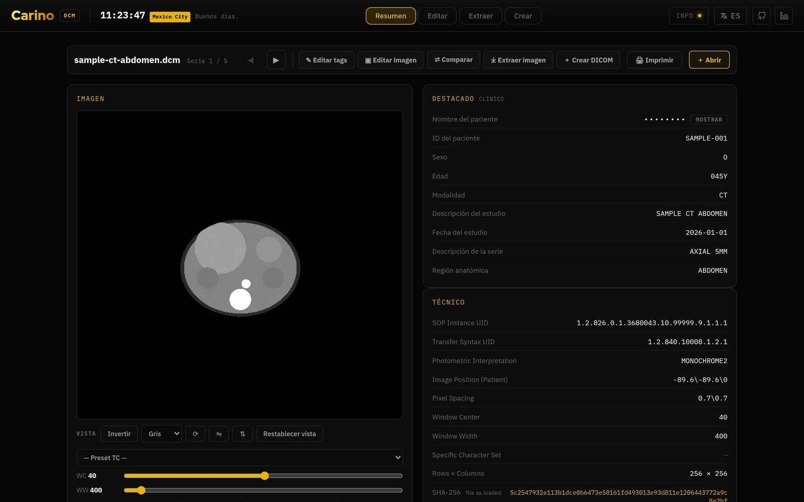
![La pestaña de edición del editor: una barra con anonimizar (PS3.15), opciones, paciente ficticio (datos de prueba), deshacer y rehacer, añadir etiqueta, JSON, CSV, imprimir, este archivo y descargar todo; una tira con las cinco series cargadas; filtros por paciente, estudio, serie, imagen, equipo, UIDs y etiquetas privadas; la tabla de etiquetas, una fila por atributo con su grupo y elemento, descripción, VR y un valor editable; y en el tercio derecho un panel de ediciones de imagen —girar, voltear, invertir y censurar el texto grabado, escrito en los píxeles guardados— sobre la vista previa, una lectura de ventana/nivel plegada y la zona para soltar archivos.](../img/es/editor-tags.webp)
El nodo de pruebas — un segundo archivo desechable
Sólo loopback · pacs serve --dev-peer · nunca en una versión distribuida
- Qué hace
- Crea un segundo archivo completo dentro de este mismo proceso, sólo en
127.0.0.1, con su propio AE title, sus propios puertos de recepción y de Query/Retrieve y su propio almacenamiento en una carpeta temporal, y deja en este equipo un destino ya apuntando a él. Es un sitio de verdad al que un estudio puede ir mientras compruebas que el reenvío, una regla de enrutamiento, la anonimización al reenviar o un C-MOVE hacen lo que crees. Junto a él se crea un destino «agujero negro» desactivado: actívalo y los envíos fallan a propósito, que es como se llena la pestaña de atascados a voluntad y se ve qué aspecto tiene un atasco antes de que ocurra de verdad. - Cómo se abre uno
- Arranca el motor con
pacs serve --dev-peer—lo dice en la línea de debajo de la URL del panel—, elige 🧪 Nodo de pruebas en el menú de la izquierda y pulsa Crear nodo. El panel pasa a mostrar su AE title, los dos puertos, su carpeta y lo que lleva recibido. Sin ese parámetro la fila no está, la API responde 404 y ningún ajuste deconfig.jsonla trae de vuelta. Es deliberado: un ajuste lo puede cambiar cualquiera que tenga el token del panel, y un parámetro de arranque no se alcanza por HTTP. - Quién puede
- Un perfil con permiso para crear y descartar el archivo de pruebas desechable. De los perfiles de serie, eso es TI y un administrador: demostrar dónde se muere un reenvío es trabajo de banco de pruebas. Recepción y el radiólogo no lo tienen, porque un segundo archivo es una herramienta de banco, no clínica. Crearlo y descartarlo quedan los dos escritos en la auditoría.
- Qué pasa con lo que guardó
- Se va todo —la carpeta y las dos filas de destino de este equipo— al pulsar Descartar, al parar el proceso y en el siguiente arranque después de un cierre brusco o un corte de luz. No sobrevive nada, que es justo la razón de usar esto en vez de escribir a mano una segunda configuración y olvidarse de la carpeta. Una cosa que hay que esperar: si lo descartas con envíos todavía en cola contra él, esos envíos se quedan sin sitio al que reintentar; límpialos en Estudios → Atascados.
Es una herramienta de banco, y el parámetro es lo que hace que siga siéndolo. El nodo es sólo loopback, y sin excepción: un archivo de pruebas que una modalidad de la red pudiera encontrar sería un segundo almacén, sin auditar, de las imágenes de alguien, y nadie se daría cuenta de que está ahí. No pases el parámetro en un equipo con estudios reales. Las versiones de escritorio y de contenedor no lo pasan nunca por ti.
7. Esto no es un producto sanitario
Carino DICOM no es un producto sanitario. No está certificado, ni autorizado, ni registrado ante ninguna autoridad reguladora, en ningún país. No lleva marcado CE como producto sanitario, no tiene autorización de la FDA, ni registro de COFEPRIS, ANMAT, INVIMA, ISP ni de ningún organismo equivalente. Nadie ha ejecutado sobre él una validación para uso clínico.
No sirve para diagnóstico primario. Aquí no hay visor diagnóstico: no hay ventaneo, ni mediciones, ni cadena de renderizado calibrada, ni control de la pantalla en la que se muestra. Interpreta los estudios en la estación de trabajo validada que ya tienes.
Dicho sin rodeos, porque es más útil que una nota al pie:
- Si lo despliegas, la validación es tuya. El cumplimiento normativo, la evaluación de riesgos, la protección de datos y la responsabilidad clínica recaen sobre la organización que lo pone en producción, no sobre el proyecto.
- Se distribuye sin garantía de ningún tipo, como dice su licencia AGPL-3.0.
- No sustituye a tu PACS ni a tu RIS. Es la pasarela entre ellos y lo que mantiene el servicio en marcha durante una caída, hasta que vuelvan.
- Trátalo como infraestructura clínica de todos modos. Que no sea un producto sanitario no lo hace inocuo: mueve datos de pacientes. Cifrado del volumen, cortafuegos, TLS, token y copias de seguridad no son opcionales.
- Si la atención de un paciente depende de esto, la responsabilidad es tuya, no del software.
Nada de esto es pesimismo: el proyecto se toma en serio que una imagen que nunca llega en silencio es peor que un fallo ruidoso, y por eso prefiere negarse a arrancar, contar explícitamente las sub-operaciones fallidas y reenviar de más antes que de menos. Solo retiene una entrega en un caso, de forma ruidosa y reversible: un destino para el que una regla pide anonimizar cuando la limpieza prometida no se puede hacer, sea porque el perfil está apagado o porque el perfil está activo y no se pudo construir ningún anonimizador. Dice cuál de los dos es, porque los dos se arreglan de forma distinta. Pero el software solo puede responder de lo que hace él; del resto respondes tú.
8. Licencia y dónde pedir ayuda
Carino DICOM se publica bajo AGPL-3.0-or-later. Como es un servidor de red, se
aplica el §13: si ejecutas una versión modificada como servicio, debes ofrecer su código a quienes
la usen. Conserva el fichero LICENSE y un enlace al código con cualquier despliegue
modificado.
- Código y seguimiento de incidencias en GitHub
- Política de seguridad — qué está protegido, qué no, y cómo reportar una vulnerabilidad
- Cómo contribuir
Si encuentras un error en este manual —o una traducción que un radiólogo no diría nunca— abre una incidencia. Los manuales en español, portugués, japonés y ruso son parte del proyecto, no un extra.
Carino DICOM · portada · parte del taller carino.systems · AGPL-3.0-or-later.